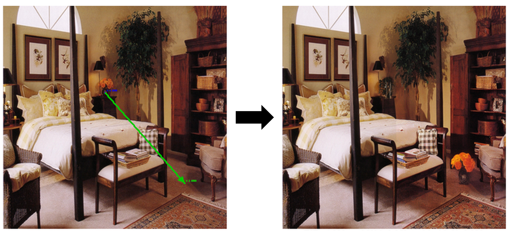
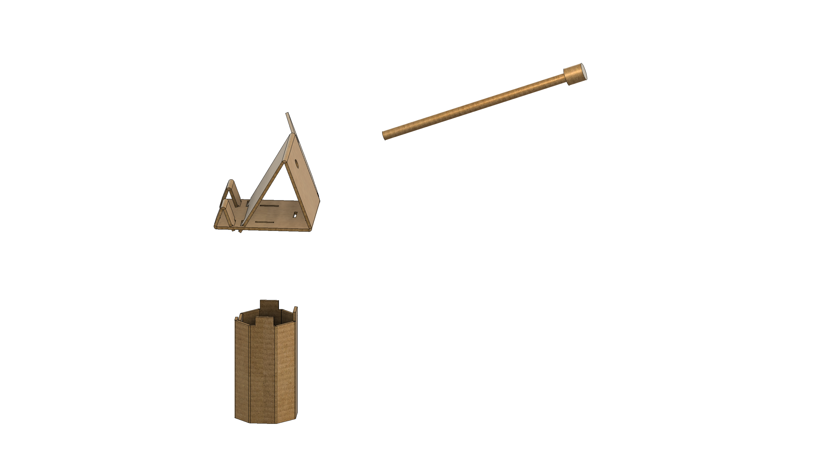
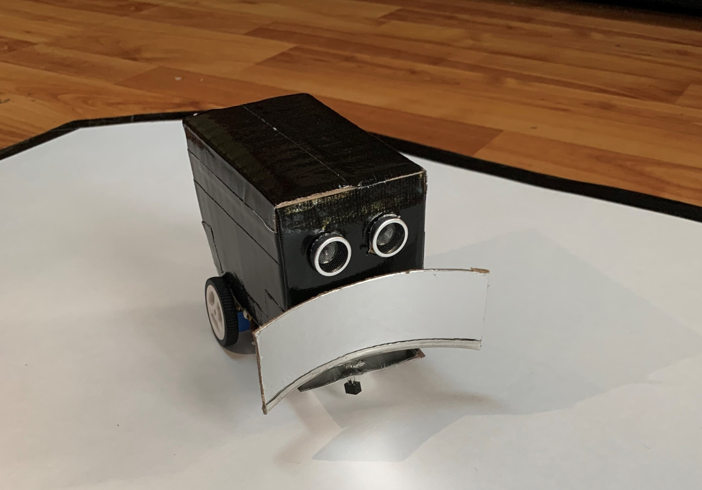

Robotics & AI | Master of Science in Applied Computing Student @ UofT
Hello! I am a dedicated student working towards a Masters of Science in Applied Computing at the University of Toronto. In 2025, I completed my undergraduate degree in mechatronics engineering and management at McMaster University. With a passion for both technology and leadership, I am excited to explore the intersection of robotics and AI in my studies and future career.
2026 - Present
2024 - 2025
2024
2022 - 2023

Implemented a training-free, depth-aware object repositioning method for diffusion-based image editing. Using monocular depth estimation to correct perspective mismatch, our approach maintains object scale, identity, and realism without retraining diffusion backbones.
Implented Extended Kalman Filter (EKF) in MATLAB for nonlinear state estimation using wheel odometry and laser rangefinder measurements.
Developed a system that autonomously performs handovers between user and robot arm, demonstrating advanced robotics and human-robot interaction capabilities.

As a Medical Maker, I developed a cost-effective Thermocoagulator Simulator that empowers medical practitioners to become confident and competent in performing thermal ablations of cervical pre-cancer lesions in resource-constrained settings.

As a contestant of the McMaster Sumobot Competition, my teammate and I constructed and programmed an autonomous robot using an Arduino microcontroller, ultrasonic and infrared sensors, DC motors, and motor drivers. The design was implemented in accordance with maximum size specifications of 10cm x 10cm and 500g.
Python, Julia, C/C++, MATLAB/Simulink, Verilog
ROS 2, NumPy, PyTorch, OpenCV, PCL, Open3D, Docker, Git
Solidworks, Inventor, Fusion 360
LTspice, Multisim, Oscilloscopes, Function Generators, FETs, Logic Gates